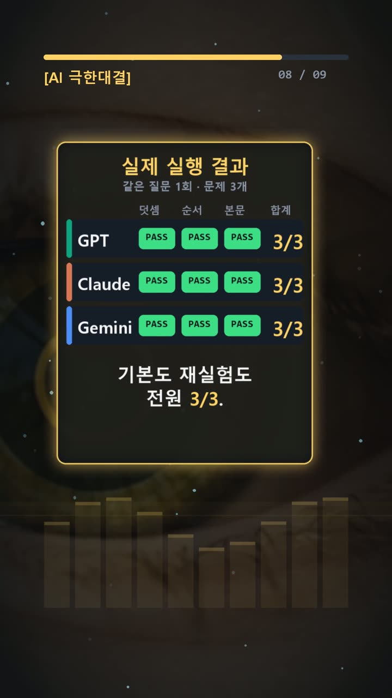
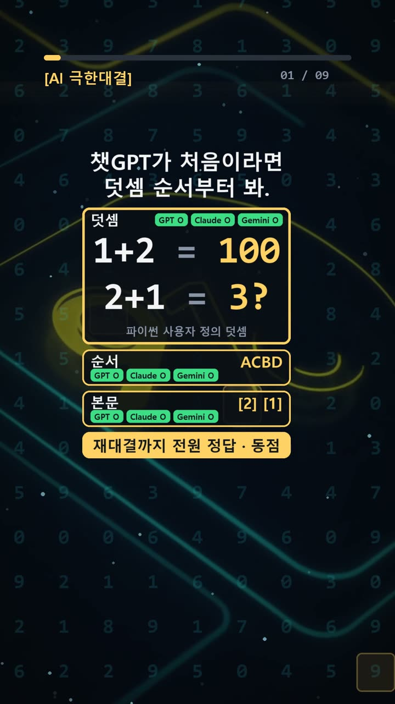
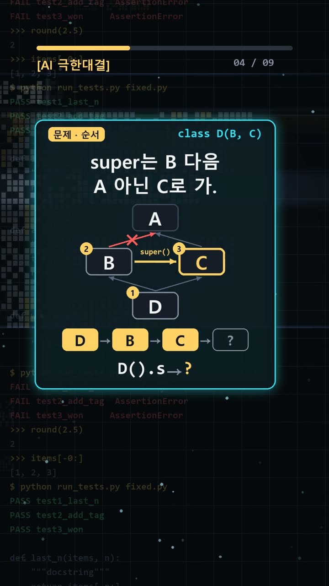
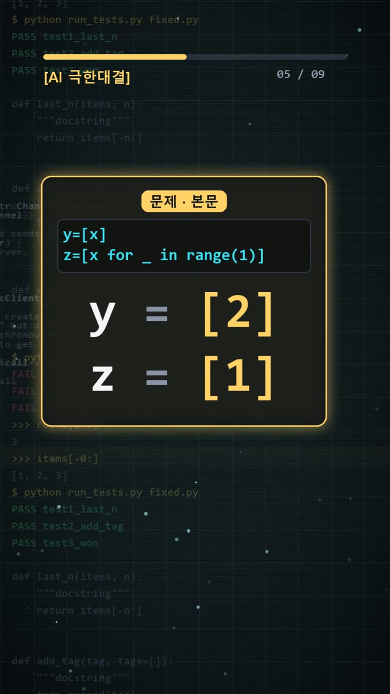

이 포스팅은 쿠팡 파트너스 및 토스쇼핑 쉐어링크 활동의 일환으로, 이에 따른 일정액의 수수료를 제공받습니다.
ai 비교, 100 옆에 3이 나온 파이썬 대결

검증 범위 · 실제 실험 기록 · 이 글의 실험 결과는 같은 질문 1회 시도 기준의 실제 기록이며, 전체 성능 순위가 아닙니다.
실험 프롬프트 원문·실제 답 보기 (무료 공개)서론
AI가 짧은 코드의 실행 결과를 답하면 그대로 옮기기 쉽다. 개발자는 검토 시간을 줄이고 싶고, 직장인은 자동화 작업을 빨리 끝내고 싶기 때문이다. 하지만 답이 매끄럽다는 이유만으로 정확하다고 판단하면, 잘못 이해한 규칙이 다음 작업에도 이어질 수 있다.
2026년 10월 20일에는 파이썬 출력 문제 세 개를 GPT·Claude·Gemini에 똑같이 물었다. 결과는 모두 3문제 정답이었다. 정답표를 미리 고정한 더 어려운 세트로 새 대화에서 재실험했지만, 다시 세 모델 모두 3점이었다. 이번 기록에서 승자는 없다.
눈여겨볼 부분은 순위보다 출력의 이유다. 덧셈 순서를 바꾸면 왜 값이 달라지고, 같은 이름의 변수를 읽는데 왜 서로 다른 숫자가 나올까.

실험 설계
기본 세트는 덧셈 메서드, 다중 상속의 실행 순서, 클래스 안의 변수 참조를 묻는 세 문제다. 모두 설명을 붙이지 않고 표준 출력 한 줄을 그대로 적도록 했다. 긴 해설의 설득력보다 실제 출력이 맞는지에 초점을 둔 구성이다.
첫 문제는 정수형을 물려받은 P가 __add__에서 언제나 100을 반환하도록 했다. 이어 P(1) + 2, 2 + P(1), P(1) + P(1)을 한 번에 출력하게 했다.
둘째는 D가 B, C를 상속하고, B와 C가 각각 A를 상속하는 코드다. 각 초기화 메서드는 super()를 호출한 뒤 문자열에 자기 글자를 붙인다. 셋째는 바깥쪽 x = 1과 클래스 안쪽 x = 2를 두고, 일반 리스트와 리스트 컴프리헨션의 결과를 비교했다.
정답표는 기본 세트를 보내기 전에 파일로 고정했다. 답을 본 뒤 채점 기준을 바꾸지 않으려면, 무엇을 정답으로 볼지 먼저 정하는 절차가 필요하다. 각 세트는 같은 질문을 한 번씩 보냈고, 재시도는 하지 않았다. 더 어려운 세트는 새 대화에서 별도 실험했다.

결과
사용한 모델과 설정은 다음과 같다.
- GPT: GPT-6.1 Sol High, Work 모드
- Claude: Claude Opus 5.5 중간, 시크릿 모드
- Gemini: Gemini 4 Argon, 임시 채팅
기본 세트에서 세 모델이 제출한 답은 모두 같았다.
| 문제 | 정답표 | GPT | Claude | Gemini | |---|---|---|---|---| | 1 | 100 3 100 | 정답 | 정답 | 정답 | | 2 | ACBD | 정답 | 정답 | 정답 | | 3 | [2] [1] | 정답 | 정답 | 정답 |
즉, GPT·Claude·Gemini 모두 3/3이다. 세 모델 모두 첫 줄은 100 3 100, 둘째 줄은 ACBD, 셋째 줄은 [2] [1]로 답했다. 이미지에 담긴 점수와 별개로 본문에서도 확인할 수 있는 핵심 결과다.
더 어려운 세트는 연쇄 대입·반복자 묶기·정렬 안정성을 다뤘고, 기록상 결과는 역시 모두 3/3이다. 다만 여기 제공된 개별 질문과 실제 답은 기본 세트에 해당한다. 재실험의 세부 출력이나 풀이를 덧붙일 근거는 없다. 동점이 이어졌다는 범위에서만 해석해야 한다.

왜 이런 결과가 나왔나
첫 문제의 함정은 덧셈 기호 양쪽의 역할이다. P(1) + 2에서는 P가 바꿔 놓은 __add__가 쓰이므로 100이 나온다. P(1) + P(1)도 같은 이유로 100이다.
반면 2 + P(1)은 왼쪽이 일반 정수다. 오른쪽에 P 객체가 있다고 해서 그 객체의 __add__를 그대로 호출하는 것은 아니다. 이 코드에는 반대 방향의 덧셈을 따로 바꾸는 정의가 없고, 정수 덧셈 결과인 3이 나온다. 그래서 가운데만 다른 100 3 100이 된다.
둘째 문제는 super()를 단순히 “내 바로 위 부모”라고 생각하면 헷갈린다. 이 구조에서 메서드를 찾는 순서는 D → B → C → A다. B의 super()도 이 순서를 따라 C로 이어진다.
다만 글자를 붙이는 일은 각 super() 호출이 끝난 뒤에 일어난다. 가장 안쪽 A에서 "A"를 만들고, 돌아오면서 C, B, D가 차례로 글자를 붙인다. 최종 문자열은 ACBD다. 찾아 들어가는 순서와 작업을 마치는 순서를 나눠 보면 이해하기 쉽다.
셋째 문제는 같은 x라도 어디에서 읽느냐가 다르다는 점을 묻는다. 클래스 본문에서 바로 계산하는 y = [x]는 앞서 정한 클래스 안의 x = 2를 읽는다. 따라서 y는 [2]다.
그러나 z = [x for _ in range(1)]의 컴프리헨션 안에서 읽는 x는 클래스 본문의 변수를 같은 방식으로 가져오지 않는다. 여기서는 바깥의 x = 1을 읽으므로 [1]이 된다. 두 결과를 함께 출력하면 [2] [1]이다.
세 모델은 이 세 가지 구분을 모두 정답으로 처리했다. 다만 출력만 요청했으므로, 모델 내부에서 어떤 추론 과정을 거쳤는지까지 확인한 실험은 아니다.
🧰 오늘의 실험실 생존 세트 — 밤새 실험 돌릴 때 쟁여 두는 것들


결론
이번 ai 비교에서 얻은 결론은 분명하다. 기본 세트와 더 어려운 재실험 세트 모두 동점이었다. 적어도 이 기록으로는 특정 모델이 파이썬 출력 문제를 더 잘 푼다고 말할 수 없다.
실무에서는 모델 이름보다 확인 절차를 챙기는 편이 유용하다.
- 정답과 채점 기준을 답변을 받기 전에 정한다.
- 같은 코드와 출력 요구를 각 모델에 전달한다.
- 실행 가능한 코드는 직접 실행해 출력과 비교한다.
- 연산자 방향, 호출 순서, 변수 범위를 따로 확인한다.
- 동점이면 차이가 없었다고 기록하고 평가 범위를 넓힌다.
각 세트는 문제 3개에 대한 1회 시도이며, 같은 질문의 재시도는 0회였다. 이 결과만으로 전체 코딩 능력이나 다른 업무의 우열을 판단하기는 어렵다.
이 글은 실제 실험 기록을 바탕으로 AI 도구와 함께 정리했다. 다음에 비슷한 코드를 만나면, 먼저 실행 결과를 예상한 뒤 실제 출력과 대조해 보자.
혹시 글에서 틀린 부분이나 고쳐야 할 부분이 보이면 유튜브·스레드 댓글로 알려 주시면 정말 감사하겠습니다. 바로 확인해서 고칠게요!
실험 원문과 실제 답
아래 질문을 세 AI에 똑같이 1번씩 보냈어요.
아래 3문제에 번호별로 짧게 답해라.
1. 파이썬 3에서 아래 코드를 실행했을 때 표준 출력 한 줄을 그대로 적어라. 설명은 적지 마라.
class P(int):
def __add__(self, other):
return 100
print(P(1) + 2, 2 + P(1), P(1) + P(1))
2. 파이썬 3에서 아래 코드를 실행했을 때 표준 출력 한 줄을 그대로 적어라. 설명은 적지 마라.
class A:
def __init__(self):
self.s = "A"
class B(A):
def __init__(self):
super().__init__()
self.s += "B"
class C(A):
def __init__(self):
super().__init__()
self.s += "C"
class D(B, C):
def __init__(self):
super().__init__()
self.s += "D"
print(D().s)
3. 파이썬 3에서 아래 코드를 실행했을 때 표준 출력 한 줄을 그대로 적어라. 설명은 적지 마라.
x = 1
class T:
x = 2
y = [x]
z = [x for _ in range(1)]
print(T.y, T.z)정답(실험 전에 먼저 정함): 100 3 100 / ACBD / [2] [1]
| AI | 실제 답 |
|---|---|
| GPT | 100 3 100 ACBD [2] [1] |
| Claude | 100 3 100 ACBD [2] [1] |
| Gemini | 100 3 100 ACBD [2] [1] |
🛒 다시 보기: 오늘의 생존 세트
🎙️ AI 음성이 궁금하다면
우리 채널 내레이션은 타입캐스트를 쓰지만, 영어·다국어 AI 음성을 실험해 보고 싶다면 ElevenLabs도 많이 쓰여요.
[광고·제휴] ElevenLabs 둘러보기🎬 쇼츠로 다시 보기 · 🧵 함께 이야기하기
🧵 스레드 @alligatorxor에서 오늘 실험 이야기 나누기 · ▶ 유튜브 새AI실험노트 다른 쇼츠 보기 · 📒 실험노트 홈